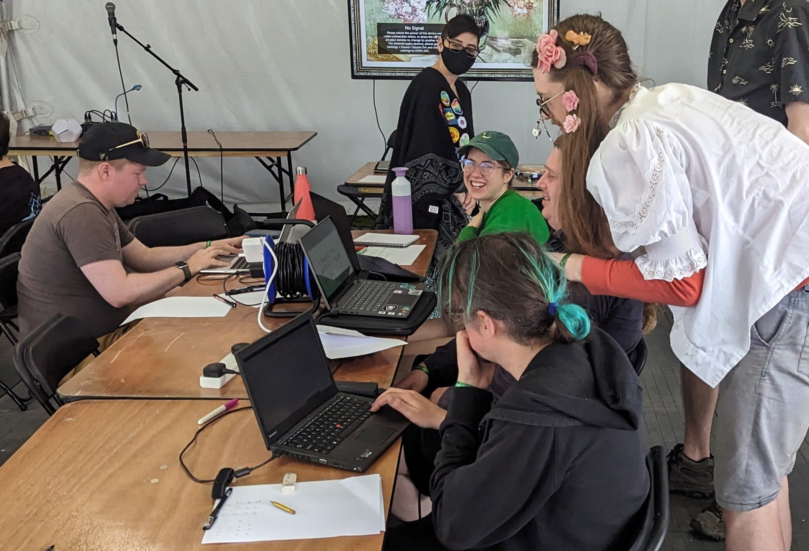
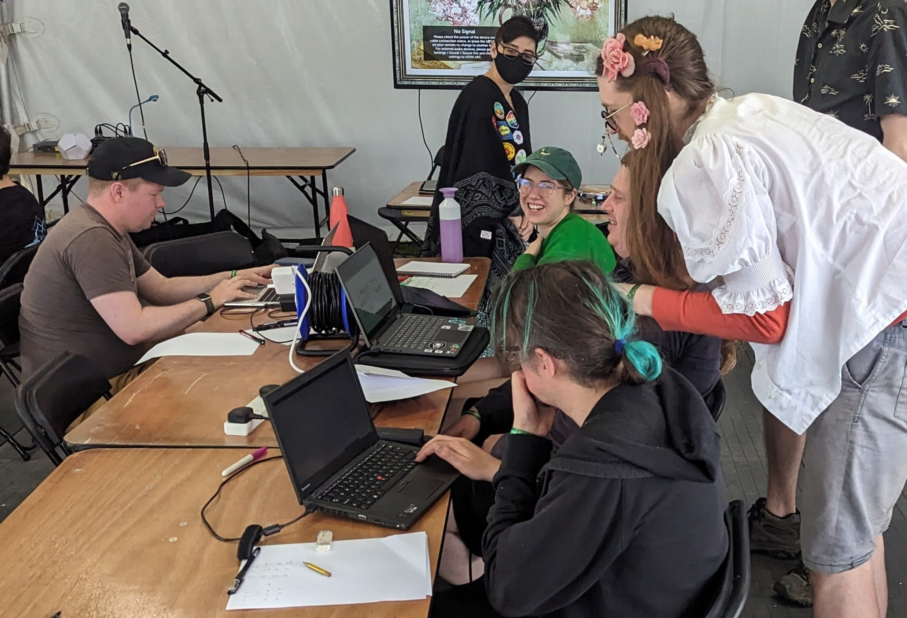

Font Workshop #
Make your own fonts!
Fonts are fun! Font creation should be accessible to anyone. This is a workshop to guide anyone through the process of making their own computer fonts, from handwriting fonts to custom-drawn, designed, copied, or modified ones.
After a short talk, I encourage experimentation with letter forms on paper, and then use of a laptop to digitally create your own font.
With one person (me) to offer wandering help, the workshop works well with up to 20 people, and takes around 1½ - 2 hours. Each person needs a laptop (or computer) which can have FontForge installed onto it, which are usually personal laptops.

 

Links
Run at
- Sheffield Hackspace on (blog)
- EMFCamp on (on the schedule)